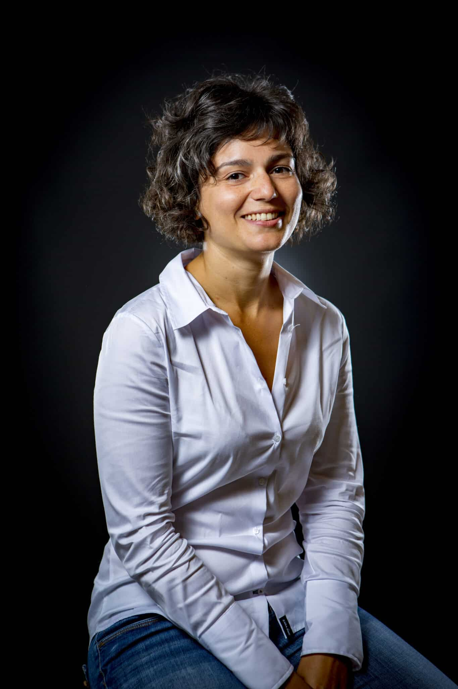
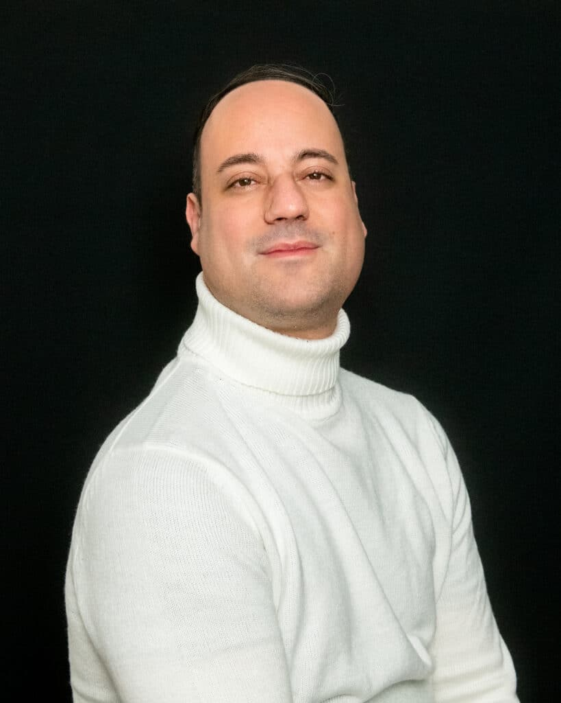
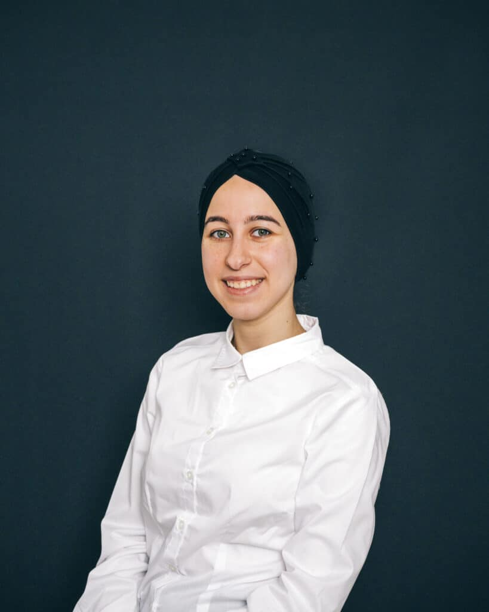

Qui sommes-nous ?


Laurie Conteville est diplômée d'un master recherche en sciences de l'ingénieur option « signaux et images application médicale », puis d'un doctorat en physique de l'université Paris-Saclay spécialité automatique au sein du Laboratoire Signaux et Système (L2S) Centrale-Supélec (2013). Elle rejoint l'Efrei en 2020.
Diplômé d'un Master en Informatique, Algorithmique et Modélisation à l'interface des Sciences (AMIS), au sein de l'université de Versailles-Saint-Quentin-En-Yvelines (UVSQ) en 2016 avant de soutenir sa thèse en 2021. Il rejoint l'Efrei en 2022.

il intègre l'Efrei en 2019 où il dirige le développement et les relations extérieures, avec pour mission de créer des passerelles entre les talents de demain et les opportunités d'aujourd'hui.

Riham Badra est doctorante de l'axe de recherche « Sécurité, Résilience & Confiance numérique » au sein de l'Efrei Research Lab.

Il obtient son diplôme d'ingénieur en informatique en 1998. Il reçoit ensuite un Master Spécialisé en base de données avancées de l'Université de Versailles en 2001 avant de passer son doctorat à l'Université Paris-EST Creteil en 2007. Il rejoint l'Esigetel en 2006 devenu par la suite l'Efrei suite à la fusion entre les deux établissements en 2016.